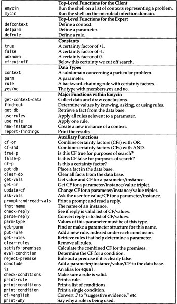
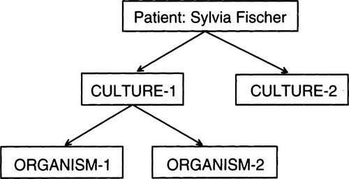

|
paip-ru
1
|
Эксперт - это тот, кто знает все больше и больше о все меньшем и меньшем.
-Nicholas Murray Butler (1862-1947)
В 1970-х годах был ужасный интерес к области экспертных систем, основанных на знаниях. Экспертная система или система, основанная на знаниях, - это система, которая решает проблемы, применяя знания, полученные от одного или нескольких экспертов в данной области. Поскольку эти эксперты, как правило, не являются программистами, они, скорее всего, выразят свои знания в терминах, которые нельзя сразу перевести в программу. Целью исследования экспертных систем является создание представления, достаточно гибкого для обработки экспертных знаний, но все же пригодного для манипулирования компьютерной программой для выработки решений.
Правдоподобный кандидат на это представление - такие же логические факты и правила, как в Прологе. Однако есть три области, в которых Пролог плохо поддерживает системемы, основанные на общих знаниях:
Ранние экспертные системы использовали самые разные методы для решения этих проблем. В конце концов стало ясно, что определенные методы используются часто, и они были зафиксированы в оболочках экспертных систем: специализированных средах программирования, которые помогали получать знания от экспертов и использовать их для решения проблем и предоставления объяснений. Идея заключалась в том, что эти оболочки обеспечат более высокий уровень абстракции, чем просто Lisp или Prolog, и упростят написание новых экспертных систем.
Экспертная система MYCIN была одной из первых и остается одной из самых известных. Это было написано доктором Эдвардо Шортлиффом в 1974 году как эксперимент по медицинской диагностике. MYCIN был разработана для назначения антибактериальной терапии при бактериальных инфекциях крови, и когда она была завершена, она была оценена для выполнения этой задачи как эксперт в этой области Её название происходит от общего суффикса лекарств, которые он назначает: эритромицин, клиндамицин и так далее. Ниже приводится слегка измененная версия одного из правил MYCIN, а также перефразирование на английский язык, созданное системой:
if (site culture is blood)
(gram organism is neg)
(morphology organism is rod)
(burn patient is serious)
then .4
(identity organism is pseudomonas))
If
1) THE SITE OF THE CULTURE IS BLOOD
2) THE GRAM OF THE ORGANISM IS NEG
3) THE MORPHOLOGY OF THE ORGANISM IS ROD
4) THE BURN OF THE PATIENT IS SERIOUS
Then there is weakly suggestive evidence (0.4) that
1) THE IDENTITY OF THE ORGANISM IS PSEUDOMONAS
MYCIN привел к разработке оболочки экспертной системы EMYCIN. EMYCIN означает "сущность(essential) MYCIN", хотя его часто неправильно представляют как "пустой(empty) MYCIN". В любом случае, название относится к оболочке для получения знаний, рассуждений с ее помощью и объяснения результатов без конкретных медицинских знаний.
EMYCIN - это интерпретатор правил с обратной цепочкой, который имеет много общего с Prolog. Однако есть четыре важных отличия. Во-первых, и это наиболее важно, EMYCIN имеет дело с неопределенностью. Вместо того чтобы настаивать на том, чтобы все предсказания были истинными или ложными, EMYCIN связывает с каждым предсказанием фактор достоверности. Во-вторых, EMYCIN кэширует результаты своих вычислений, чтобы их не нужно было дублировать. В-третьих, EMYCIN предоставляет системе простой способ запросить информацию у пользователя. В-четвертых, он дает объяснения своего поведения. Это можно выразить уравнением:
Сначала мы рассмотрим отличия EMYCIN от Prolog. После этого мы вернемся к основному ядру EMYCIN, интерпретатору правил с обратной цепочкой. Наконец, мы покажем, как добавить некоторые медицинские знания к EMYCIN для воссоздания MYCIN. Глоссарий программы находится на рисунок 16.1.
| []() |
|---|

|
| Рисунок 16.1: Глоссарий программы EMYCIN |
*(ed: this could be a markdown table)*
EMYCIN имеет дело с неопределенностью, заменяя два логических значения, истинное и ложное, на диапазон значений, называемых факторами достоверности. Это числа от -1 (ложь) до + 1 (истина), где 0 представляет собой полностью неизвестное. В Лиспе:
Чтобы определить логику факторов достоверности, нам необходимо определить логические операции, такие как and/и, or/или, not/не. Первая операция, которую следует рассмотреть, - это сочетание двух различных частей доказательств, выраженных как факторы определенности. Предположим, мы пытаемся определить вероятность того, что у пациента есть заболевание Χ. Предположим, что у нас есть группа предыдущих пациентов, которым были даны два лабораторных теста. Первый тест говорит, что у 60% пациентов есть заболевание, а второй говорит, что оно есть у 40%. Как нам объединить эти два доказательства в одно? К сожалению, невозможно правильно ответить на этот вопрос, не зная больше о зависимости двух источников друг от друга. Предположим, что первый тест показывает, что 60% пациентов (которые все оказались мужчинами) имеют болезнь, а второй говорит, что 40% (которые все оказались женщинами) болеют. Тогда мы должны сделать вывод, что он есть у 100%, потому что два теста охватывают все население. С другой стороны, если первый тест положителен только для пациентов в возрасте 70 лет и старше, а второй положителен только для пациентов в возрасте 80 лет и старше, то второй является лишь частью первого. Это не добавляет никакой новой информации, поэтому в данном случае правильный ответ - 60%.
В section 16.9 мы рассмотрим способы учета такого рода рассуждений. А пока мы представим метод комбинирования, фактически используемый в EMYCIN. Он определяется формулой:
combine (A, B) =
A+B-AB;A,B>0A+B+AB;A,B<0A+B1-minAB;otherwise
Согласно этой формуле, combine(.60,.40) = .76, что является компромиссом между крайними значениями 0,60 и 1,00. Это то же самое, что вероятность p(A or B), если предположить, что A и B независимы.
Однако должно быть ясно, что факторы уверенности - это не то же самое, что вероятности. Факторы уверенности пытаются справиться с недоверием так же, как с доверием, но не с зависимостью и независимостью. Функция комбинирования EMYCIN имеет ряд желаемых свойств:
До сих пор мы видели, как combine(комбинирование) двух отдельных доказательств одной и той же гипотезы. Другими словами, если у нас есть два правила:
A => C
B => C
и мы знаем A с коэффициентом достоверности (certainty factor - cf) .6 и B со значением cf .4, тогда мы можем заключить C с cf .76. Но рассмотрим правило с коньюнкцией(объединением) в посылке:
A and B => C
Комбинирование A и B в этом случае сильно отличается от их комбинирования, когда они находятся в отдельных правилах. EMYCIN выбирает комбинирование объединений, беря минимум фактора уверенности(cf) каждого конъюнкта. Если бы факторы уверенности были вероятностями, это было бы эквивалентно предположению зависимости между конъюнктами в правиле. (Если бы конъюнкты были независимыми, то правильным ответом было бы произведение вероятностей.) Итак, EMYCIN делает вполне разумное (но иногда неверное) предположение, что условия, связанные вместе в одном правиле, будут зависеть друг от друга, в то время как условия в отдельных правилах независимы.
Последняя сложность заключается в том, что сами правила могут быть неопределенными. То есть MYCIN использует правила, которые выглядят так:
A and B => .9C
говорят, что A и B подразумевают C с уверенностью(cf) .9. EMYCIN просто умножает cf правила на комбинированный cf предпосылки. Таким образом, если A имеет cf .6, а B имеет cf .4, то посылка в целом имеет cf .4 (минимум A и B), который умножается на .9, чтобы получить .36. Затем .36 комбинируется с любыми существующими cf для C. Если C заранее неизвестен, то объединение .36 с 0 даст .36. Если бы у C был предыдущий cf равный .76, то новый cf был бы .36 + .76 - (.36 x .76) = .8464.
Вот функции комбинации факторов достоверности EMYCIN в Lisp:
Факторы уверенности можно рассматривать как обобщение истинностных значений. EMYCIN - это система правил с обратной связью, которая объединяет факторы достоверности в соответствии с функциями, изложенными выше. Но если бы мы использовали только факторы достоверности true и false, тогда EMYCIN вел бы себя точно так же, как Prolog, возвращая только ответы, которые определенно истинны. Дополнительный механизм EMYCIN имеет значение только тогда, когда мы предоставляем частичные факторы уверенности.
На самом деле значения истинности служат в Прологе двум целям. Они определяют окончательный ответ, да, но они также определяют, когда прекращать поиск: если какая-либо из посылок правила ложна, то нет смысла смотреть на другие посылки. Если в EMYCIN мы прекращаем поиск только тогда, когда одна из предпосылок была абсолютно ложной, тогда нам, возможно, пришлось бы перебирать множество правил, только чтобы получить ответы с очень низкими факторами уверенности. Вместо этого EMYCIN произвольно прекращает поиск и считает предпосылку ложной, если ее коэффициент достоверности(фактор уверенности) ниже .2. Следующие функции поддерживают эту произвольную точку отсечения:
Упражнение 16.1 [m] Предположим, вы читаете заголовок "Элвис жив в Каламазу" в бульварной газете, которой вы приписываете коэффициент уверенности .01. Если вы объедините достоверность, используя правило комбинирования EMYCIN, сколько еще экземпляров газеты вам нужно будет увидеть, прежде чем вы станете уверенным, что Элвис жив .95?
Второе, что отличает EMYCIN от Prolog, - это то, что EMYCIN кэширует все полученные данные в базе данных. Когда Prolog просят дважды доказать одну и ту же цель, он дважды выполняет одно и то же вычисление, независимо от того, насколько это трудоемко. EMYCIN выполняет вычисление в первый раз и просто извлекает его во второй раз.
Мы можем реализовать простую базу данных, предоставив три функции: put-db для добавления связи между ключом и значением, get-db для получения значения и clear-db для очистки базы данных, чтобы начать сначала:
Эта база данных достаточно общая, чтобы удерживать любую связь между ключом и значением. Однако большая часть информации, которую мы хотим сохранить, носит более конкретный характер. EMYCIN предназначен для работы с объектами (или экземплярами) и атрибутами (или параметрами) этих объектов. Например, у каждого пациента(patient) есть параметр имя(name). Предположительно, значение этого параметра будет известно точно. С другой стороны, каждый микроскопический организм имеет параметр identity(идентичности), который обычно не известен в начале консультации. Применение правил приведет к нескольким возможным значениям этого параметра, каждое со своим коэффициентом достоверности(фактором уверенности). В общем, тогда в базе данных будут ключи вида (экземпляр параметра) со значениями вида ((*val*1*cf*1) (*val*2*cf*2)...) . В следующем коде get-vals возвращает список пар значение/cf для данного параметра и экземпляра, get-cf возвращает фактор уверенности(коэффициент достоверности/cf) для триплета параметр/экземпляр/значение, а update-cf изменяет фактор уверенности за счет объединения старого с новым. Обратите внимание, что при первом вызове update-cf для данного триплета параметра/экземпляра/значения, get-cf вернет неизвестность(ноль). Комбинируя это с данным cf, получаем сам cf. Также обратите внимание, что база данных должна быть equal хэш-таблицей, потому что ключи могут включать в себя только что созданные списки.
База данных содержит всю информацию, относящуюся к конкретному случаю проблемы. Например, в области медицины база данных будет содержать всю информацию о текущем пациенте. Когда мы хотим рассмотреть нового пациента, база данных очищается.
Есть еще три источника информации, которые нельзя сохранить в этой базе данных, потому что их нужно поддерживать от одной проблемы к другой. Во-первых, база правил содержит все правила, определенные экспертом. Во-вторых, есть структура для определения каждого параметра; они индексируются под именем каждого параметра. В-третьих, мы увидим, что поток управления частично управляется списком контекстов(contexts), которые необходимо учитывать. Это структуры, которые будут переданы функции MYCIN.
Третий способ, которым EMYCIN отличается от Prolog, - это предоставление автоматических средств для задания вопросов пользователю, когда ответы не могут быть получены из правил. Это не принципиальная разница; в конце концов, не так уж сложно написать правила Пролога, которые выводят запрос и читают ответ. EMYCIN позволяет разработчику базы знаний написать простое объявление вместо правила и даже примет объявление по умолчанию, если оно не предусмотрено. Система также гарантирует, что один и тот же вопрос никогда не будет задан дважды.
Следующая функция ask-vals печатает запрос, который запрашивает параметр экземпляра и считывает от пользователя значение или список значений с соответствующими факторами достоверности. Функция сначала просматривает базу данных, чтобы убедиться, что вопрос не задавался ранее. Затем она проверяет каждое значение и фактор уверенности, чтобы убедиться, что каждое из них относится к правильному типу, а также позволяет пользователю задавать определенные вопросы. А ? ответ покажет, какой тип ответа ожидается. Rule(Правило) покажет текущее правило, над которым работает система. Why(Почему) также показывает текущее правило, но более подробно объясняет, что система знает и что пытается выяснить. Наконец, help выводит следующую сводку:
Вот и ask-vals. Обратите внимание, что параметры why и rule предполагают, что текущее правило было сохранено в базе данных. Вскоре будут определены функции print-why, parm-type и check-reply.
Далее следует prompt-and-read-vals, функция, которая фактически запрашивает запрос и читает ответ. По сути, он вызывает format, чтобы напечатать приглашение, и read, чтобы получить ответ, но здесь есть несколько тонкостей. Во-первых, она вызывает finish-output. Некоторые реализации Lisp буферизуют вывод построчно. Поскольку приглашение не может заканчиваться новой строкой, finish-output гарантирует, что вывод будет напечатан до того, как будет прочитан ответ.
До сих пор весь код, который ссылается на parm, действительно ссылается на имя параметра-символа. Сами фактические параметры будут реализованы в виде структур. Мы используем get-parm для поиска структуры, связанной с символом, и функции селектора parm-prompt, чтобы выбрать подсказку для каждого параметра, и parm-reader, чтобы выбрать функцию чтения. Обычно это будет функция read, но read-line подходит для чтения параметров со строковыми значениями.
Макрос defparm (показанный здесь) обеспечивает способ определения подсказок и считывателей для параметров.
Функция check-reply использует parse-reply для преобразования ответа пользователя в каноническую форму, а затем проверяет, что каждое значение имеет правильный тип и что каждый фактор уверенности действителен. Если да, база данных обновляется, чтобы отразить новые факторы уверенности.
Параметры реализованы в виде структур с шестью слотами: имя - name (символ), context - контекст, для которого предназначен параметр, prompt - приглашение, используемое для запроса значения параметра, логическое значение, которое сообщает, следует ли спрашивать пользователя до или после использования правил, ограничение типа, описывающее допустимые значения, и, наконец, функция, используемая для чтения значения параметра.
Параметры хранятся в списке свойств с их именами в свойстве parm, поэтому для получения имени типа parm требуется сначала получить структуру parm, а затем выбрать поле ограничения типа. По умолчанию параметру присваивается тип t, что означает, что для этого типа допустимо любое значение. Мы также определяем тип yes/no- да/ нет, который пригодится для логических(Boolean) параметров.
Мы хотим, чтобы запрос по умолчанию был "What is the PARM of the INST?"(Что такое PARM INST?) Но в большинстве пользовательских подсказок требуется напечатать inst, а не parm. Чтобы упростить написание пользовательских подсказок, prompt-and-read-vals делает экземпляр первым аргументом строки формата, а parm - вторым. Следовательно, в приглашении по умолчанию нам нужно использовать директиву формата "~*", чтобы пропустить аргумент экземпляра, и "~2:*" для возврата назад на два аргумента, чтобы вернуться к экземпляру. (Эти директивы распространены в вызовах cerror, где один список аргументов передается двум строкам формата.)
defparm - это макрос, который вызывает new-parm, функцию - конструктор, определенную в parm структуре, и сохраняет полученную структуру под именем параметра в свойстве parm .
Ранее мы приводили уравнение, связывающее EMYCIN с Prolog. Это уравнение было не совсем правильным, потому что в EMYCIN отсутствует одна из самых важных функций Prolog: логическая переменная. Вместо этого EMYCIN использует контексты - contexts. Итак, полное уравнение:
EMYCIN = Prolog + uncertainty + caching + questions + explanations + contexts - variables (EMYCIN = Пролог + неопределенность + кеширование + вопросы + объяснения + контексты - переменные)
Контекст определяется разработчиками MYCIN как ситуация, в которой работает программа. Но имеет смысл рассматривать контекст просто как тип данных. Таким образом, список контекстов, предоставленный программе, определит, о каких типах объектов можно рассуждать. Программа отслеживает самый последний экземпляр каждого типа, и правила могут ссылаться только на эти экземпляры, используя имя типа. В нашей версии MYCIN существует три типа или контекста: пациенты(patients), культуры(cultures) и организмы(organisms). Вот пример правила, которое ссылается на все три контекста:
if (site culture is blood)
`(gram organism is neg)` `(morphology organism is rod)` `(burn patient is serious)`
then .4
`(identity organism is pseudomonas))`
На данный момент игнорируя факторы уверенности, это правило MYCIN эквивалентно правилу Пролога в форме:
(and (culture ?c) (site ?c blood)
(organism ?o) (gram ?o neg) (morphology ?o rod)
(patient ?p) (burn ?p serious)))
Механизм контекста обеспечивает достаточную гибкость для обработки многих случаев, которые в противном случае обрабатывались бы переменными. Одна важная вещь, которую нельзя сделать, - это ссылаться на несколько экземпляров одного и того же контекста. Можно сослаться только на самый последний экземпляр. Контексты реализованы как структуры со следующим определением:
Поле name(имя) похоже на patient или organism. Экземпляры контекстов нумеруются; поле number содержит номер самого последнего экземпляра. У каждого контекста также есть два списка параметров. Параметры начальных данных запрашиваются при создании каждого экземпляра. Параметры исходных данных обычно известны пользователю. Например, врач обычно знает имя, возраст и пол пациента, и в целях обучения ожидает, что ему сначала зададут эти вопросы, даже если они не учитываются в каждом случае. С другой стороны, параметры цели обычно неизвестны пользователю. Они определяются в процессе поиска/прохождения обратной цепочки.
Следующая функция создает новый экземпляр контекста, записывает сообщение и сохраняет этот экземпляр в двух местах в базе данных: под ключом current-instance, а также под именем контекста. Контексты образуют дерево. В нашем примере контекст patient(пациент) является корнем дерева, а текущий пациент хранится в базе данных под ключом patient. Следующий уровень дерева предназначен для культур, взятых у пациента; текущая культура хранится в ключе culture. Наконец, есть уровень для организмов, обнаруженных в каждой культуре. Текущий организм хранится под ключами organism и current-instance. Контекстное дерево показано на рисунке 16.2.
| []() |
|---|

|
| Рисунок 16.2: Дерево контекста |
Теперь, когда мы увидели, чем EMYCIN отличается от Prolog, мы готовы заняться тем же способом: интерпретатором правил с обратной цепочкой. Как и Prolog, EMYCIN ставит перед собой цель и применяет правила, соответствующие этой цели. Применение правила означает рассмотрение каждой посылки правила как цели и рекурсивное применение правил, соответствующих каждой посылке.
Остались еще некоторые отличия. В Прологе целью может быть любое выражение, и подходящими правилами являются те, чьи головы объединяются/унифицируются с целью. Если какое-либо подходящее правило сработает, значит, цель истинна. В EMYCIN правило может дать цели уверенность .99, но мы все равно должны учитывать все другие правила, соответствующие цели, потому что они могут снизить точность ниже порога отсечения. Таким образом, EMYCIN всегда сначала собирает все свидетельства, относящиеся к паре параметр/экземпляр, и оценивает/вычисляет цель только после того, как все свидетельства получены. Например, если цель была (temp patient > 98.6), Emycin сначала вычислит все правила с выводами(заключениями) о текущей температуре пациента, и только затем сравнит температуру с 98.6.
С другой стороны, в Прологе есть возможность искать в глубину, потому что семантика правил Пролога такова, что если какое-либо правило утверждает, что цель истинна, то это правда. EMYCIN должен искать в ширину, потому что цель с уверенностью 0,99 может оказаться ложной при рассмотрении большего количества доказательств.
Теперь мы готовы набросать схему интерпретатора правил EMYCIN. Для find-out параметра экземпляра: Если значение уже хранится в базе данных, используйте известное значение В противном случае, два варианта: использование правил или спросить пользователя. Делайте это в порядке, указанном для этого параметра, и, если первый успешен, не беспокойтесь о втором. Обратите внимание, что ask-vals (определенную выше) не будет задавать один и тот же вопрос дважды.
Чтобы использовать правила, найдите все правила, относящиеся к данному параметру, и вычислите их с помощью use-rule. После того, как каждое правило было проверено/опробавано, если какое-либо из них вычисляется как истинное, то считается успешным.
Чтобы использовать правило use-rule, сначала проверьте, можно ли полностью отклонить какую-либо из посылок. Если бы у нас не было этой проверки, то система могла бы начать задавать пользователям явно не относящиеся к делу вопросы. Таким образом, мы тратим часть времени программы (проверяя каждую предпосылку дважды), чтобы сэкономить более ценное время пользователя. (Функция eval-condition принимает необязательный аргумент, определяющий, должны ли мы рекурсивно задавать вопросы, пытаясь принять или отклонить условие.)
Если никакая посылка не может быть отклонена, то вычислите каждую посылку по очереди с помощью evaluate-condition, отслеживая накопленный фактор уверенности с помощью cf-and (который в настоящее время равен min), и отключите вычисление, когда фактор уверенности падает ниже порогового значения. Если посылки вычислены в true то добавьте выводы в базу данных. Последовательность вызовов выглядит так. Обратите внимание, что рекурсивный вызов find-out - это то, что позволяет выполнять цепочку:
find-out ; Чтобы узнать параметр для экземпляра:
get-db ; Посмотрите, кэшируется ли он в базе данных
ask-vals ; Посмотрите, знает ли пользователь ответ
use-rules ; Посмотрите, есть ли для этого правило:
reject-premise ; Посмотрите, является ли это правило откровенно ложным
satisfy-premises ; Или посмотрите, верно ли каждое условие:
eval-condition ; Вычислите каждое условие
find-out ; Путем нахождения значений параметра
Перед показом интерпретатора приведем определение структуры правил вместе с функциями для поддержки базы данных правил:
Итак, вот интерпретатор find-out. Он может узнать значение (значения) параметра тремя способами. Во-первых, он проверяет, сохранено ли уже значение в базе данных. Затем он пытается спросить пользователя или использовать правила. Порядок, в котором проверяются эти две опции, зависит от свойства параметра parm-ask-first. В любом случае, если ответ определен, он сохраняется в базе данных.
Функция eval-condition вычисляет одно условие, возвращая его коэффициент достоверности(фактор уверенности). Если find-out-p истинен, она сначала вызывает find-out, который может либо запросить пользователя, либо применить соответствующие правила. Если find-out-p ложен, она вычисляет условие, используя текущее состояние базы данных. Она делает это, просматривая каждое сохраненное значение для пары параметр/экземпляр и вычисляя на нем оператор. Например, если условие равно (temp patient > 98.6), а значения temp для текущего пациента равны ((98 .3) (99 .6) (100 .1)), то eval-condition проверит каждое из значений 98, 99 и 100 против 98,6 с помощью оператора >. Этот тест будет успешным дважды, поэтому результирующий коэффициент достоверности составит .6 + .1 = .7.
Функция reject-premise предназначена для быстрой проверки исключения правила. Таким образом, она вызывает eval-condition с find-out-p nil, поэтому она отклонит предпосылку, только если она явно ложна, без поиска дополнительной информации.
Если посылки правила верны, то выводы добавляются в базу данных с помощью conclude. Обратите внимание, что is - единственный оператор, разрешенный в выводах, is - просто псевдоним для equal(равенства).
Все условия имеют вид: (parameter instance operator value) - (параметр экземпляр оператор значение). Например: (morphology organism is rod). Функция parse-condition превращает список этой формы в четыре значения. Хитрость в том, что она использует базу данных для возврата текущего экземпляра контекста, а не самого имени контекста:
На этом этапе такой вызов, как (find-out 'identity 'organism-1) будет действовать правильно, только если мы каким-то образом ввели правильную информацию о текущем пациенте, культуре и организме. Функция get-context-data гарантирует, что каждый контекст обрабатывается по порядку. Сначала создается экземпляр, затем используется find-out для определения как исходных параметров данных, так и целей. Выводы для каждой цели печатаются, и программа спрашивает, есть ли еще один экземпляр этого контекста. Наконец, нам также нужна функция верхнего уровня emycin, которая просто очищает базу данных перед вызовом get-context-data.
На этом этапе вся серьезная вычислительная работа завершена: мы определили механизм правил обратной цепочки, который имеет дело с неопределенностью, кэшированием, запросами и контекстами. Но с точки зрения взаимодействия ввода/вывода предстоит еще немало поработать. Язык программирования должен только взаимодействовать с программистами, поэтому вполне допустимо, чтобы программист делал всю работу. Но оболочка экспертной системы должна облегчить (если не отменить) потребность в программистах. Оболочки экспертной системы действительно имеют два класса пользователей: эксперты используют оболочку при разработке системы, а конечные пользователи или клиенты используют получившуюся экспертную систему, когда она завершена. Иногда эксперт может вводить знания непосредственно в оболочку, но чаще предполагается, что эксперт будет пользоваться помощью инженера знаний - кого-то, кто обучен использованию оболочки и извлечению знаний, но не обязательно либо эксперт в своей области, либо опытный программист.
В нашей версии EMYCIN мы предоставляем только самые простые инструменты, облегчающие работу эксперта. Макросы defcontext и defparm, определенные выше, немного проще, чем явный вызов make-context и make-parm, но не намного. Макрос defrule определяет правило и проверяет наличие очевидных ошибок:
Функция check-conditions проверяет, что каждое правило имеет по крайней мере одну предпосылку и вывод, что каждое условие имеет правильную форму и что значение условия имеет правильный тип для параметра. Также проверяется, что в выводах используется только оператор is:
Настоящий EMYCIN имел интерактивную среду, которая запрашивала у эксперта каждый контекст, параметр и правило. Рэндалл Дэвис (1977, 1979, Davis and Lenat 1982 описывает программу TEIRESIAS, которая помогала вводить и отлаживать правила.
Как только знание получено(введено), нам нужен какой-то способ увидеть(вывести) его. Клиент хочет запустить систему над своей собственной проблемой и увидеть две вещи: решение проблемы и объяснение, почему решение является разумным. EMYCIN предоставляет примитивные возможности для обоих из них. Функция report-findings выводит информацию обо всех параметрах цели для данного экземпляра:
Единственная возможность объяснения, которую предлагает наша версия EMYCIN, - это способ увидеть текущее правило. Если пользователь вводит rule в ответ на запрос, печатается псевдоанглийский перевод текущего правила. Вот пример правила и его перевод:
Функция print-rule генерирует такой перевод:
Если пользователь вводит why в ответ на запрос, печатается более подробное описание того же правила. Сначала отображаются уже известные предпосылки, а затем - оставшаяся часть правила. Запрашиваемый параметр всегда будет первой предпосылкой в оставшейся части правила. current-rule сохраняется в базе данных с помощью use-rule всякий раз, когда применяется правило, но оно также устанавливается с помощью get-context-data для атома initial или цели, когда система запрашивает для параметров. print-why также проверяет этот случай. Обратите внимание на использование функции partition-if со страницы 256.
Это завершает определение emycin. Теперь мы готовы применить оболочку к конкретному домену, что положит начало созданию экспертной системы.
В этом разделе emycin применяется к исходной области Mycin: инфекционное заболевание крови. В нашей версии MYCIN существует три контекста: сначала мы рассматриваем пациента, затем любые культуры, выращенные из образцов, взятых у пациента, и, наконец, любые инфекционные организмы в культурах. Цель состоит в том, чтобы определить идентичность каждого организма. Настоящий MYCIN был более сложным с учетом любых лекарств или операций, которые пациент мог перенести ранее. Он также решал реальный вопрос: какую терапию назначить. Однако большая часть этого была сделана с помощью специальных процедур для расчета оптимальных дозировок и т.п., поэтому здесь они не рассматриваются. Исходный MYCIN также проводил различие между существующими и предшествующими культурами, организмами и лекарствами. Всего нужно было рассмотреть десять контекстов, в то время как в нашей версии их всего три:
Эти контексты объявляют, что мы сначала спросим каждого пациента, имя, пол и возраст, а также месторасположение каждой культуры и количество прошедших дней, с момента её изоляции. Для организмов нет первоначальных вопросов, но для них есть цель: определить идентичность организма.
Следующим шагом является объявление параметров для контекстов. Каждому параметру присваивается тип, и большинству из них даются prompts(приглашения/подсказки), чтобы сделать диалог более естественным:
Теперь нам нужны некоторые правила, которые помогут определить идентичность организмов. Следующие правила взяты из Shortliffe 1976. Номера правил относятся к страницам, на которых они перечислены. Настоящий MYCIN имел около 400 правил, касающихся гораздо более широкого спектра предпосылок и выводов.
Вот пример использования программы:
From what site was the specimen for CULTURE-1 taken? blood
How many days ago was this culture (CULTURE-1) obtained? 3
Пользователь набрал ? чтобы увидеть список действительных ответов. Диалог продолжается:
What is the AEROBICITY of ORGANISM-1? Why
Пользователь хочет знать, почему система спрашивает об аэробности организма. Ответ показывает текущее правило, то, что уже известно о правиле, и тот факт, что если организм аэробный, то мы можем сделать некоторые выводы о его идентичности. В этом гипотетическом случае организм фактически аэробен:
What is the AEROBICITY of ORGANISM-1? aerobic
Is Sylvia Fischer a compromised host? yes
`Is Sylvia Fischer a burn patient? If so. mild or serious? why`
`Is Sylvia Fischer a burn patient? If so, mild or serious? serious`
Система использовала правило 107, чтобы сделать вывод, что это могут быть энтеробактерии. Уверенность равна .8, достоверность самого правила, потому что все условия были достоверно известны. Правила 52 и 75 поддерживают гипотезу псевдомонад. Коэффициенты достоверности двух правил, .6 и .4, объединяются по формуле .6 + .4 - (.6 x .4) = .76. После распечатки результатов для первого организма система спрашивает, был ли другой организм получен из этой культуры:
Is there another ORGANISM? (Y or N) Y
What is the AEROBICITY of ORGANISM-2? anaerobic
Для второго организма лабораторный тест не дал результатов, поэтому пользователь ввел квалифицированный ответ, указывающий, что он, вероятно, является грамотрицательным, но, возможно, грамположительным. Этот организм тоже был rod, но был анаэробным. Обратите внимание, что система не повторяет вопросы, ответы на которые ей уже известны. При рассмотрении правил 75 и 52 она уже знает, что посев произошел из крови, и что пациент является скомпрометированным хозяином и серьезным ожоговым пациентом. В конце концов, правило 73 способствует выводу о бактероидах, а правила 75 и 52 снова объединяются, чтобы предложить pseudomonas, хотя и с более низким фактором уверенности, потому что обнаружение neg имело более низкий фактор уверенности:
Наконец, программа дает пользователю возможность расширить контекстное дерево новыми организмами, культурами или пациентами:
Is there another ORGANISM? (Y or N) N
Is there another CULTURE? (Y or N) N
Is there another PATIENT? (Y or N) N
Набор правил, перечисленных выше, не демонстрирует двух важных характеристик системы: возможность обратной цепочки и возможность использовать операторы, отличные от тех, которые находятся в помещении.
Если мы добавим следующие три правила и повторим случай, показанный выше, то вычисление правила 75 вернется к правилу 1, 2 и, наконец, 3, пытаясь определить, является ли пациент скомпрометированным хозяином. Обратите внимание, что задается вопрос: "What is Sylvia Fischer's white blood cell count?"(Какое количество лейкоцитов у Сильвии Фишер?), а не "Is the white blood cell count of Sylvia Fischer < 2.5?"(Является ли количество лейкоцитов Сильвии Фишер < 2.5?) Последний вопрос будет достаточным для рассматриваемой предпосылки, но не будет столь же полезным для других правил, которые могут относиться к WBC.
Факторы уверенности - это компромисс. Хорошая новость заключается в том, что система, основанная на правилах с факторами уверенности, требует, чтобы эксперт придумал только небольшой набор чисел (по одному для каждого правила), и позволит быстро вычислять ответы. Плохая новость в том, что вычисленный ответ может привести к иррациональным решениям.
Факторы уверенности были подтверждены их эффективностью (MYCIN работает так же или лучше, чем опытные врачи) и интуитивным обращением (они удовлетворяют критериям, перечисленным на странице 534). Однако они подвержены парадоксам, когда вычисляют странные результаты (как в упражнении 16.1, стр. 536). Если правила, составляющие базу знаний, построены по модульному принципу, то проблем обычно не возникает, но, безусловно, вызывает беспокойство то, что ответы могут быть недостоверными.
До MYCIN большинство рассуждений о неопределенности делалось с помощью теории вероятностей. Законы вероятности - в частности, закон Байеса - представляют собой хорошо обоснованный математический формализм, который не зависит от несоответствий факторов уверенности. Действительно, можно показать, что теория вероятностей является единственным формализмом, ведущим к рациональному поведению, в том смысле, что если вам нужно сделать серию ставок на некоторые неопределенные события, объединение информации с теорией вероятности даст вам наивысшую ожидаемую ценность для вашего Пари. Несмотря на это, в середине 1970-х от теории вероятностей отказались. Аргумент, сделанный Шортлиффом и Бьюкененом (1975), заключался в том, что теория вероятностей требует слишком большого количества условных вероятностей и что люди не умеют их оценивать. Они утверждали, что с факторами уверенности интуитивно легче справиться. Эту точку зрения разделяли и другие исследователи того времени. Шафер с последующими уточнениями Демпстера создал теорию функций убеждений, которая, как и факторы уверенности, представляет собой комбинацию убеждений за и против события. Вместо того, чтобы представлять событие единственной вероятностью или определенностью, теория Демпстера-Шафера поддерживает два числа, которые аналогичны нижней и верхней границе вероятности. Вместо одного числа, такого как .5, теория Демпстера-Шейфера будет иметь интервал вроде [.4, .6], представляющий диапазон вероятностей. Полное отсутствие знаний будет представлено диапазоном [0,1]. В конце 1970-х - начале 1980-х годов было вложено много усилий в эти и другие невероятностные теории. Другой пример - теория нечетких множеств Заде, которая также основана на интервалах.
Существует множество свидетельств того, что людям трудно решать проблемы, связанные с вероятностью. В серии очень занимательных и наводящих на размышления статей Тверски и Канеман (1974, 1983, 1986) как люди делают иррациональный выбор, когда сталкиваются с проблемами, довольно простыми с математической точки зрения. Они сравнивают эти ошибки в выборе с ошибками визуального восприятия, вызванными оптическими иллюзиями. Этим ошибкам подвержены даже обученные врачи и статистики.
В качестве примера рассмотрим следующий сценарий. Адриан и Доминика собираются пожениться. Адриан идет на обычный анализ крови, и ему говорят, что результаты положительны для редкого генетического заболевания, которым страдает только 1 человек из 10 000. Врач говорит, что тест на 99% точен - он дает ложноположительные результаты только в 1 из 100 случаев. Адриан подавлен, будучи убежденным, что вероятность того, что действительно заболеть, составляет 99%. К счастью, Доминика оказалась знакомой с байесовской теорией и быстро успокоила Адриана, что вероятность около 1%. Рассуждения таковы: возьмите 10 001 человека наугад. Предполагается, что из них только 1 болен. Этот человек определенно мог ожидать положительный результат теста на болезнь. Но если все остальные 10 000 человек сдадут анализ крови, то 1% из них или 100 человек также будут иметь положительный результат. Таким образом, вероятность того, что действительно заболеть, при положительном результате теста составляет 1/101. Докторов обучили такому анализу, но, к сожалению, многие из них продолжают рассуждать больше как Адриан, чем Доминика.
В конце 1980-х годов волна субъективной байесовской теории вероятностей начала возвращаться. Cheeseman (1985) показал, что, хотя теория Демпстера-Шафера выглядит способной, на самом деле она не может помочь вам принимать лучшие решения, чем теория вероятностей. Хекерман (1986) повторно исследовал факторы достоверности MYCIN, показывая, как их можно интерпретировать как вероятности. Книга Иудеи Перл, 1988 является красноречивой защитой теории вероятностей. Он показывает, что существуют эффективные алгоритмы для объединения и распространения вероятностей, пока сеть взаимозависимостей не содержит петель. Кажется вероятным, что неопределенные рассуждения в 1990-х годах все больше будут основываться на байесовской теории вероятностей.
The MYCIN project is well documented in Buchanan and Shortliffe 1984. An earlier book, Shortliffe 1976, is interesting mainly for historical purposes. Good introductions to expert systems in general include Weiss and Kulikowski 1984, Waterman 1986, Luger and Stubblefield 1989, and Jackson 1990.
Dempster-Shafer evidence theory is presented enthusiastically in Gordon and Shortliffe 1984 and in a critical light in Pearl 1989/1978. Fuzzy set theory is presented in Zadeh 1979 and Dubois and Prade 1988.
Pearl (1988) captures most of the important points that lead to the renaissance of probability theory. Shafer and Pearl 1990 is a balanced collection of papers on all kinds of uncertain reasoning.
Exercise 16.2 [s] Suppose the rule writer wanted to be able to use symbolic certainty factors instead of numbers. What would you need to change to support rules like this:
Exercise 16.3 [m] Change prompt-and-read-vals so that it gives a better prompt for parameters of type yes/no.
Exercise 16.4 [m] Currently, the rule writer can introduce a new parameter without defining it first. That is handy for rapid testing, but it means that the user of the system won't be able to see a nice English prompt, nor ask for the type of the parameter. In addition, if the rule writer simply misspells a parameter, it will be treated as a new one. Make a simple change to fix these problems.
Exercise 16.5 [d] Write rules in a domain you are an expert in, or find and interview an expert in some domain, and write down rules coaxed from the expert. Evaluate your resulting system. Was it easier to develop your system with EMYCIN than it would have been without it?
Exercise 16.6 [s] It is said that an early version of MYCIN asked if the patient was pregnant, even though the patient was male. Write a rule that would fix this problem.
Exercise 16.7 [m] To a yes/no question, what is the difference between yes and (no-1) ? What does this suggest?
Exercise 16.8 [m] What happens if the user types why to the prompt about the patient's name? What happens if the expert wants to have more than one context with a name parameter? If there is a problem, fix it.
The remaining exercises discuss extensions that were in the original EMYCIN, but were not implemented in our version. Implementing all the extensions will result in a system that is very close to the full power of EMYCIN. These extensions are discussed in chapter 3 of Buchanan and Shortliffe 1984.
Exercise 16.9 [h] Add a spelling corrector to ask-vals. If the user enters an invalid reply, and the parameter type is a member expression, check if the reply is "close" in spelling to one of the valid values, and if so, use that value. That way, the user can type just entero instead of enterobacteriaceae. You may experiment with the definition of "close," but you should certainly allow for prefixes and at least one instance of a changed, missing, inserted, or transposed letter.
Exercise 16.10 [m] Indent the output for each new branch in the context tree. In other words, have the prompts and findings printed like this:
From what site was the specimen for CULTURE-1 taken? blood
How many days ago was this culture (CULTURE-1) obtained? 3
Is there another ORGANISM? (Y or N) N
Is there another CULTURE? (Y or N) N
Is there another PATIENT? (Y or N) N
Exercise 16.11 [h] We said that our emycin looks at all possible rules for each parameter, because there is no telling how a later rule may affect the certainty factor. Actually, that is not quite true. If there is a rule that leads to a conclusion with certainty 1, then no other rules need be considered. This was called a unity path. Modify the program to look for unity paths first.
Exercise 16.12 [m] Depending on whether a parameter is in initial-data or not, all the relevant rules are run either before or after asking the user for the value of the parameter. But there are some cases when not all initial data parameters should be asked for. As an example, suppose that identity and gram were initial data parameters of organism. If the user gave a positive answer for identity, then it would be wasteful to ask for the gram parameter, since it could be determined directly from rules. After receiving complaints about this problem, a system of antecedent rules was developed. These rules were always run first, before asking questions. Implement antecedent rules.
Exercise 16.13 [h] It is useful to be able to write default rules that fill in a value after all other rules have failed to determine one. A default rule looks like this:
It may also have other conjuncts in the premise. Beside details like writing the unknown operator, the difficult part is in making sure that these rules get run at the right time (after other rules have had a chance to fill in the parameter), and that infinite loops are avoided.
Exercise 16.14 [h] The context tree proved to be a limitation. Eventually, the need arose for a rule that said, "If any of the organisms in a culture has property X, then the culture has property Y." Implement a means of checking for some or every instance of a context.
Exercise 16.15 [m] As the rule base grew, it became increasingly hard to remember the justification for previous rules. Implement a mechanism that keeps track of the author and date of creation of each rule, and allows the author to add documentation explaining the rationale for the rule.
Exercise 16.16 [m] It is difficult to come up with the perfect prompt for each parameter. One solution is not to insist that one promptfits all users, but rather to allow the expert to supply three different prompts: a normal prompt, a verbose prompt (or reprompt) for when the user replies with a ?, and a terse prompt for the experienced user. Modify defparm to accommodate this concept, add a command for the user to ask for the terse prompts, and change ask-vals to use the proper prompt.
The remaining exercises cover three additional replies the user can make: how, stop, and change.
Exercise 16.17 [d] In addition to why replies, EMYCIN also allowed for how questions. The user can ask how the value of a particular parameter/instance pair was determined, and the system will reply with a list of rules and the evidence they supplied for or against each value. Implement this mechanism. It will require storing additional information in the data base.
Exercise 16.18 [m] There was also a stop command that immediately halted the session. Implement it.
Exercise 16.19 [d] The original EMYCIN also had a change command to allow the user to change the answer to certain questions without starting all over. Each question was assigned a number, which was printed before the prompt. The command change, followed by a list of numbers, causes the system to look up the questions associated with each number and delete the answer to these questions. The system also throws away the entire context tree and all derived parameter values. At that point the entire consultation is restarted, using only the data obtained from the unchanged questions. Although it may seem wasteful to start over from the beginning, it will not be wasteful of the user's time, since correct answers will not be asked again.
Identify what needs to be altered to implement change and make the alterations.
Exercise 16.20 [h] Change the definition of cf-and and cf-or to use fuzzy set theory instead of certainty factors. Do the same for Dempster-Shafer theory.
Answer 16.1 Because EMYCIN assumes independence, each reading of the same headline would increase the certainty factor. The following computation shows that 298 more copies would be needed to reach .95 certainty. A more sophisticated reasoner would realize that multiple copies of a newspaper are completely dependent on one another, and would not change the certainty with each new copy.
Answer 16.2 The defrule expandsto (make-rule :number '101 :cf true ...); that is, the certainty factor is unquoted, so it is already legal to use true as a certainty factor! To support probably and other hedges, just define new constants.
Answer 16.4 Just make the default parameter type be nil (by changing t to nil in parm-type). Then any rule that uses an undefined parameter will automatically generate a warning.
Answer 16.6
Answer 16.7 Logically, there should be no difference, but to EMYCIN there is a big difference. EMYCIN would not complain if you answered (yes 1 no 1). This suggests that the system should have some way of dealing with mutually exclusive answers. One way would be to accept only yes responses for Boolean parameters, but have the input routine translate no to (yes -1) and (no *cf*) to (yes 1-*cf*). Another possibility would be to have update-cf check to see if any certainty factor on a mutually exclusive value is 1, and if so, change the other values to -1.
Answer 16.18 Add the clause (stop (throw 'stop nil)) to the case statement inask-valsandwrapa (catch 'stop ...) around the code in emycin.
1.8.13